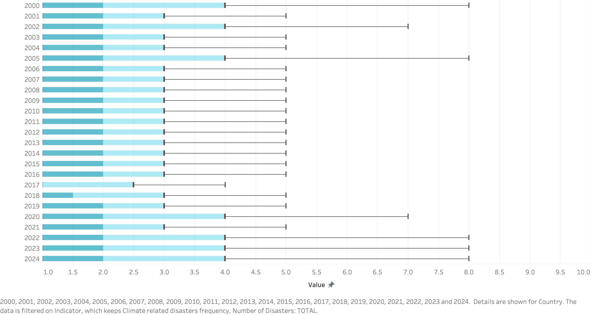
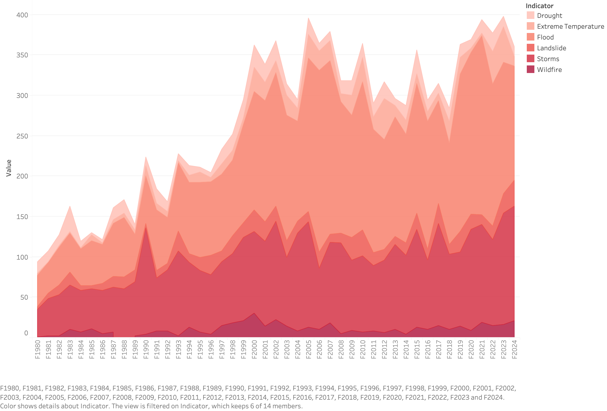

Proposition: Climate-related disasters have not significantly increased in recent decades.
FOR the Proposition

Design Decisions and Rationale:
- Chose boxplots showing the distribution of disaster counts across countries for each year rather than global totals. This shifts attention from aggregate growth to country-level patterns. By emphasizing medians and interquartile ranges, the visualization highlights stability in the central tendency and spread of disaster frequency rather than dramatic cumulative increases
- The visualization excludes earlier decades (1980s–1990s), focusing only on the past 25 years. This removes the steepest portion of the long-term increase and reframes the question as whether disasters have risen recently, not historically
- Outlier points were hidden to prevent a small number of high-disaster countries from visually dominating the plot. This reduces extreme spikes that might imply increasing severity.
AGAINST the Proposition

Design Decisions and Rationale:
- Stacked area charts visually accumulate values over time, making increases appear larger and more continuous than line charts might. The expanding total area creates a visual sense of escalation
- Red and orange hues are associated with danger and urgency. Using warm tones reinforces the emotional framing of increasing climate risk
- Displaying multiple hazard types (flood, drought, storms, etc.) adds complexity and makes the growth feel multidimensional. Instead of a single line increasing, multiple expanding layers suggest systemic intensification.
Final Reflection
Designing these two visualizations made it clear how much power lies not in the data itself, but in the framing decisions around it. What was most straightforward was generating technically accurate plots—the dataset supports both narratives without fabrication. What was more difficult was recognizing how subtle changes (timeframe selection, aggregation level, color choice, normalization) dramatically shift interpretation without altering a single value. I was surprised by how convincingly both claims could be supported while remaining factually defensible. The boxplots felt analytically responsible, yet their restricted timeframe and removal of outliers clearly dampened urgency. Conversely, the stacked area chart felt intuitively “true” because it aligned with dominant climate discourse, but its cumulative structure and use of warm tones amplified the perception of escalation. The exercise made me more aware that persuasion in visualization often happens through emphasis rather than distortion.
I now define ethical analysis and visualization as transparency about framing. All visualizations involve choices and those choices inevitably guide interpretation. The boundary between acceptable persuasion and misleading design seems to lie in whether the designer obscures materially relevant context.Choosing a recent timeframe to explore a focused question can be acceptable if that limitation is stated clearly; truncating axes to exaggerate change without disclosure crosses into manipulation. Similarly, removing outliers for clarity is defensible if the audience understands that extreme values exist. Ethical visualization does not necessarily require neutrality, it requires transparency about scope, assumptions, and trade-offs.